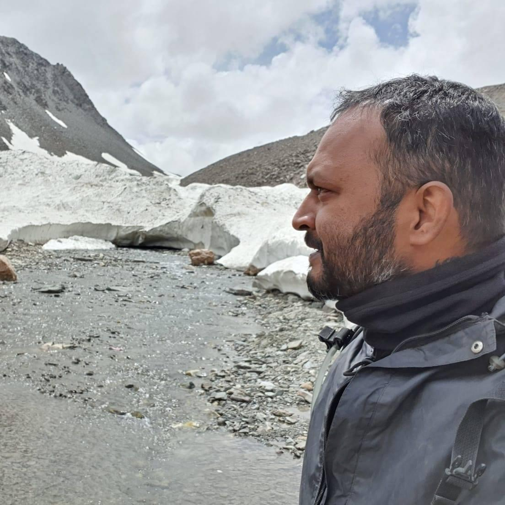

About Me

Traveler, Explorer, Biker Enthusiast
Welcome to my portfolio, your good friend from India for an immersive journey through my extensive travel
experiences. Over the past decade, I've traversed the length and breadth of India, from the serene landscapes of
Himachal Pradesh to the captivating shores of Kanyakumari, and from the vibrant streets of Gujarat to the enchanting
hills of Manipur. My wanderlust has led me to explore nearly every state in India, including the idyllic Andaman
Islands, each destination offering a unique tapestry of culture, tradition, and opportunity.
But my adventures didn't stop there. Venturing beyond borders, I embarked on exhilarating expeditions across six
different countries, all on the back of my trusty motorbike. Along the way, I've had the privilege of engaging with
diverse communities, from bustling city dwellers to humble farmers, gaining insights into their way of life and the
challenges they face.
Next time when you are in India, Contact Me